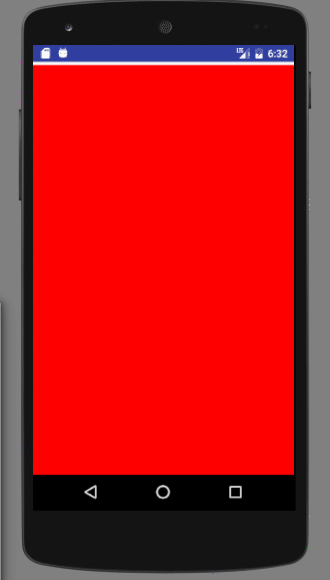

引言
上一节我们讲了自定义 View,接下来就要说说和他差不多的自定义 ViewGroup。两个实现的方法名差不多，比如他们的构造方法，比如同样需要去测量，布局，自定义属性，所以就不再重复说明这些，不如写一个 demo 吧。
View 与 ViewGroup 的不同点总结
- 测量:
ViewGroup 作为一个容器，他需要去测量子 View 的宽高，打包成他们的期望
- 布局:
ViewGroup 要去覆写 onLayout,去布局孩子，调用孩子 layout 方法，指定孩子上下左右的位置
- 绘制 ViewGroup 一般不绘制自己
重写的方法
generateLayoutParams
@Override
protected LayoutParams generateLayoutParams(LayoutParams p) {
return super.generateLayoutParams(p);
}
但是我还是想把他放在第一个说，因为在这里有一个非常重要的概念，那就是 LayoutParams !
大家不妨去回忆下，我们假如在一个 RelativeLayout 布局里面添加 View，这个View就可以定义 android:layout_toXXXOf，android:layout_alignXX...这些属性，同样在 LinearLayout 中的子 View 就会带有 android:layout_weight 这个属性。 如果大家去看他们的源码，会发现其内部定义了 LinearLayout.LayoutParams，在此类中，你可以发现你所使用的属性的身影。
onMeasure
ViewGroup的onMeasure的方法与View的方式是有区别的，他需要去管理子View，其中一点就是负责子View的显示大小。
@Override
protected void onMeasure(int widthMeasureSpec, int heightMeasureSpec) {
super.onMeasure(widthMeasureSpec, heightMeasureSpec);
int childCount = getChildCount();
for (int i=0;i<childCount;i++){
View childView = getChildAt(i);
measureChild(childView,widthMeasureSpec,heightMeasureSpec);
}
}
onLayout
当我们在绘制自定义ViewGroup的时候，我们必须重写他的onLayout，就是用来管理子View显示的位置。
@Override
protected void onLayout(boolean b, int l, int i1, int i2, int i3) {
int count = getChildCount();
int width = 0;
int height = 0;
MarginLayoutParams params = null;
for (int i = 0; i < count; i++){
View childView = getChildAt(i);
width = childView.getMeasuredWidth();
height = childView.getMeasuredHeight();
params = (MarginLayoutParams) getLayoutParams();
switch (i){
case 0:
l = params.leftMargin;
i1 = getHeight() - height - params.bottomMargin;
break;
case 1:
l = getWidth() - width - params.leftMargin - params.rightMargin;
i1 = getHeight() - height - params.bottomMargin;
break;
}
i2 = l + width;
i3 = height + i1;
childView.layout(l, i1, i2, i3);
}
}
代码是不是非常好理解，我们在最后神奇的发现，原来就是ViewGroup去主动调用View的layout方法，来决定他的位置。这就是容器与组件的区别。
接下来我们在布局中去使用我们的自定义ViewGroup，我们来看下布局与效果。
<?xml version="1.0" encoding="utf-8"?>
<com.xlh.demo.MyViewGroup xmlns:android="http://schemas.android.com/apk/res/android"
android:layout_width="match_parent"
android:layout_height="match_parent">
<TextView
android:background="@color/colorAccent"
android:layout_width="100dp"
android:layout_height="100dp"/>
<TextView
android:background="@color/colorPrimary"
android:layout_width="100dp"
android:layout_height="100dp" />
</com.example.xlh.demo.MyViewGroup>

我们的自定义ViewGroup算是有个基本的认识了，更多的学习需要在实际项目在去使用，拆轮子。但是博主并不想这么快的结束这篇文章，太草率会对不起广大读者的，不妨做个小案例把!
先看效果图

接下来就直接上代码，不是很难
public class CustomScrollView extends ViewGroup {
private int mScreenHeight;
private int mStartY;
private int mEnd;
private Scroller mScroller;
private int mLastY;
private int childCount;
public CustomScrollView(Context context) {
this(context,null);
}
public CustomScrollView(Context context, AttributeSet attrs) {
super(context,attrs);
WindowManager wm= (WindowManager) getContext().getSystemService(Context.WINDOW_SERVICE);
mScreenHeight=wm.getDefaultDisplay().getHeight();
mScroller = new Scroller(getContext());
}
@Override
protected void onMeasure(int widthMeasureSpec, int heightMeasureSpec) {
super.onMeasure(widthMeasureSpec, heightMeasureSpec);
int childCount = getChildCount();
for (int i=0;i<childCount;i++){
View childView = getChildAt(i);
measureChild(childView,widthMeasureSpec,heightMeasureSpec);
}
}
@Override
protected void onLayout(boolean changed, int l, int t, int r, int b) {
childCount = getChildCount();
MarginLayoutParams lp = (MarginLayoutParams) getLayoutParams();
lp.height=mScreenHeight * childCount;
setLayoutParams(lp);
for (int i = 0; i< childCount; i++){
View childView = getChildAt(i);
if(childView.getVisibility()!=View.GONE){
childView.layout(l,i*mScreenHeight,r,(i+1)*mScreenHeight);
}
}
}
@Override
public boolean onTouchEvent(MotionEvent event) {
int y = (int) event.getY();
switch (event.getAction()){
case MotionEvent.ACTION_DOWN:
mLastY = y;
mStartY = getScrollY();
break;
case MotionEvent.ACTION_MOVE:
if(!mScroller.isFinished()){
mScroller.abortAnimation();
}
int dY= mLastY -y;
if(getScrollY()<0){
dY/=3;
}
if(getScrollY()>mScreenHeight*getChildCount()-mScreenHeight){
dY=0;
}
scrollBy(0,dY);
mLastY=y;
break;
case MotionEvent.ACTION_UP:
mEnd = getScrollY();
int dScrollY = mEnd - mStartY;
if(dScrollY>0){
if(getScrollY()<0){
mScroller.startScroll(0,getScrollY(),0,-dScrollY);
}else{
if (dScrollY<mScreenHeight/3){
mScroller.startScroll(0,getScrollY(),0,-dScrollY);
}else{
mScroller.startScroll(0,getScrollY(),0,mScreenHeight-dScrollY);
}
}
}else{
if(getScrollY()>mScreenHeight*getChildCount()-mScreenHeight){
mScroller.startScroll(0,getScrollY(),0,-dScrollY);
}else{
if(-dScrollY<mScreenHeight/3){
mScroller.startScroll(0,getScrollY(),0,-dScrollY);
}else {
mScroller.startScroll(0, getScrollY(), 0, -mScreenHeight - dScrollY);
}
}
}
break;
}
postInvalidate();
return true;
}
@Override
public void computeScroll() {
super.computeScroll();
if(mScroller.computeScrollOffset()){
scrollTo(0,mScroller.getCurrY());
postInvalidate();
}
}
}
布局文件
<?xml version="1.0" encoding="utf-8"?>
<com.timen4.ronnny.customscrollview.widget.CustomScrollView xmlns:android="http://schemas.android.com/apk/res/android"
xmlns:tools="http://schemas.android.com/tools"
android:id="@+id/main"
android:layout_width="match_parent"
android:layout_height="match_parent"
tools:context="com.timen4.ronnny.customscrollview.MainActivity">
<View
android:background="#ff0000"
android:layout_width="wrap_content"
android:layout_height="wrap_content"/>
<View
android:background="#0000ff"
android:layout_width="wrap_content"
android:layout_height="wrap_content"/>
<View
android:background="#ffff00"
android:layout_width="wrap_content"
android:layout_height="wrap_content"/>
<View
android:background="#00ff00"
android:layout_width="wrap_content"
android:layout_height="wrap_content"/>
</com.timen4.ronnny.customscrollview.widget.CustomScrollView>